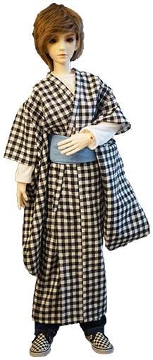
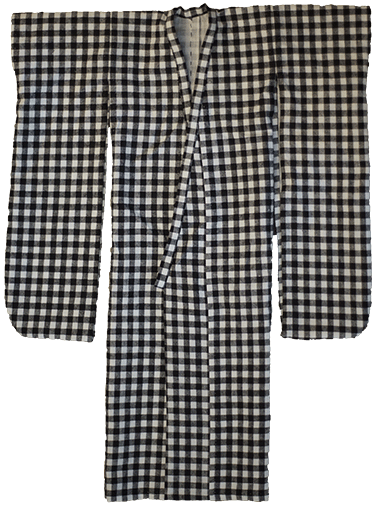
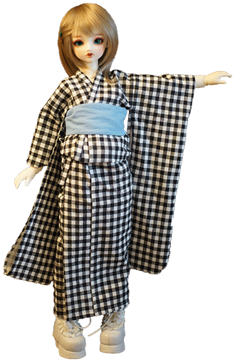
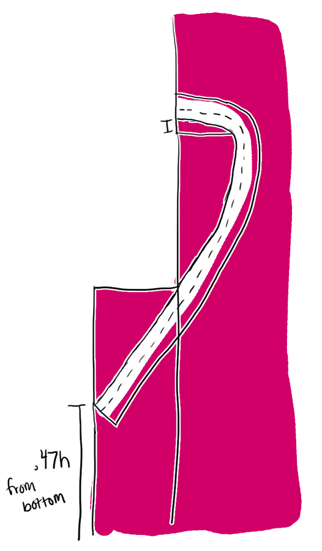
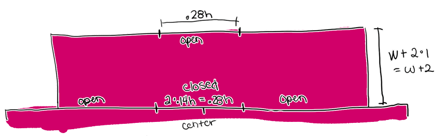

Permission is hereby granted, free of charge, to any person obtaining a copy of this software and associated documentation files (the "Software"), to deal in the Software without restriction, including without limitation the rights to use, copy, modify, merge, publish, distribute, sublicense, and/or sell copies of the Software, and to permit persons to whom the Software is furnished to do so, subject to the following conditions:
The above copyright notice and this permission notice shall be included in all copies or substantial portions of the Software.
THE SOFTWARE IS PROVIDED "AS IS", WITHOUT WARRANTY OF ANY KIND, EXPRESS OR IMPLIED, INCLUDING BUT NOT LIMITED TO THE WARRANTIES OF MERCHANTABILITY, FITNESS FOR A PARTICULAR PURPOSE AND NONINFRINGEMENT. IN NO EVENT SHALL THE AUTHORS OR COPYRIGHT HOLDERS BE LIABLE FOR ANY CLAIM, DAMAGES OR OTHER LIABILITY, WHETHER IN AN ACTION OF CONTRACT, TORT OR OTHERWISE, ARISING FROM, OUT OF OR IN CONNECTION WITH THE SOFTWARE OR THE USE OR OTHER DEALINGS IN THE SOFTWARE.
shown on IH oYID (model) boy and SD10 girl. if you have issues with my kitsuke, go back to your immortal geisha discord group and let everyone know.
  this pattern is based off the measurements of a yukata i already own. It should be scalable to any size doll, so i used javascript magic to have modifiable instructions. i used 1 cm for seam allowance, and rolled every seam under and secured it with a blind hem stitch. it is completely unlined. mine is made out of cotton, so its technically a yukata, but you could make yours out of silk.
there are a few differences between mens and womens kimono. for one, men don't wear furisode (long sleeves) or have ohashori (fold under the waist). it's illegal to put your boy in a furisode but i won't call the cops on you. the fit on the male oYID body isnt perfect, it should be slightly longer to hit his ankles and the sleeves should hit his wrists.
you WILL have to handsew at least the eri on to keep the fabric from bunching around the neck. snip in on any edge that wants to bunch up on you. press your seams with you iron for a much cleaner look.
here's a kimono diagram since i am a weeaboo.
For a male doll, use the shoulder to ankle height. For a female doll, use full height with head. Wingspan is the measurement between the wrists while the arms are stretched out. Sleeve length for a casual yukata can be around .28*height. If you want to make some insanely long furisode i will not stop you. Use cm for all measurements. if you dont press recalculate, the measurements I used will be shown. I did make a few math error when doing mine, so i suggest you recalculate but the set measurements will work.
secret bonus: the height of my yukata is 149, the wingspan is 120, and the sleeves are 41.5 cm. have fun, humans.
For SD10: For the sleeves, cut two 72x12cm. For the body, cut one 21x111cm. For the okumi (front panel), cut two 46x8cm. For the eri (collar), cut one 69x4cm. For the tomoeri, cut one 32.5x4cm.
i found the middle of the strip and cut upward 55cm. i measured 8cm in from each shoulder and cut from the center outward until i reached that point.
from here, i folded the back in half and made a seam .5 cm in. the body should technically be 2 strips, but this saves the effort of adding a french seam.
add another .5cm seam across the body horizontally 13.8cm down from the neck cut. i dont know what this fold is called, but its on my yukata. it wont be a big deal to omit it.
next i connected the okumi (front panel) on both sides using a french seam. do .5 cm and then a 2nd .5 cm because i didnt math this out right. align with the bottom of the front center cut on both sides.
press the collar strip in half and sew the ends together leaving 1cm at each end and stopping 1cm from the open end. trim edges and turn rightside out. separate the edges, folding one edge down.
pin the center of the collar to the center back (right side to right side). The collar should be rounded just slighly above the cut in the neck for a smoother fit. connect the bottom of the collar to the edge 26.4cm from the bottom (diagram is incorrect, should be .47h+1). Carefully pin the collar down to prevent bunching. Sew ONLY the bottom edge down. Trim around the area just sewn, and fold the other edge (and the edge of the body and okumi) into the collar. Don't forget to double fold the front edges of the okumi inward before sewing the collar down.
for a thicker eri, we can add a tomoeri. iron in half, right sides out, and then press all edges 1cm inward. center this with the back seam and sew this over the collar.
center the middle of the sleeve with the neckcut of the body piece with the right sides together. sew 7.6 cm from the center seam on each side of the center for a total of 15.2cm.
flatten the sleeve in half at the center line of the neck. the armhole is 15.2 cm total or 7.6cm when folded in half, flat. this is the same length as the connection between the body and sleeve. leave this length from the top of the sleeve fold open. sew downward from this point and round out the front bottom of the sleeve. stop at the edge of the sleeve closest to the body. do not continue upward to close the sleeve.
the miyatsukuchi is a open space in the side seam from the bottom of the sleeves down. for men, the miyatsukuchi is very small. for women, its large enough to put your hands through and flatten an ohashori out. leave a space on the body side seam under the sleeves 5.1cm long. sew down the rest of the seam to the bottom.
you should have lots of unfinished edges now! its very unslightly so double fold all of these and sew them down.
use a blind hem stitch if you dont want the threads to show. if your thread matches well or you just dont care, topstitch it on a machine to save multiple hours.
now how do you put this thing on????